직업상담사-2급 (2012-03-04 기출문제)
1과목: 직업상담학
1. 행동주의 접근의 상담기법 중 불안이 원인이 되는 부적응 행동이나 회피행동을 치료하는 데 가장 효과적인 방법은?
- 타임 아웃기법
- 모델링 기법
- 체계적 둔감법
- 과잉 교정기법
(정답률: 86%)

2. 상담사와 내담자가 처음 만났을 때 사용해 볼 수 있는 구조화된 면접기법으로 내담자의 정보와 행동을 이해하는데 도움을 주는 것은?
- 생애진로 사정
- 직업지도프로그램
- 직무분석
- 긴장완화프로그램
(정답률: 86%)
3. 직업상담기법에 관한 설명으로 틀린 것은?
- 은유사용하기 : 내담자가 이야기 속에서 문제해결방법을 통하여 자신의 문제해결의 실마리를 찾는다.
- 논리적 오류 : 다른 사람의 경험에 대하여 직접 의사소통을 해보지 않고 그 사람의 마음을 읽을 수 있다고 자신하는 사람에게 사용된다.
- 의미 있는 질문 사용하기 : 자신과 그들의 세계를 다른 각도에서 바라볼 수 있는 기회를 주는 것이며 자아개념이 낮은 내담자에게 효과가 있다.
- 근거 없는 믿음 확인하기 : 거절에 대하여 두려워할 필요가 없으며 모든 사람이 원하는 직업을 다 갖는 것이 아니며 거절당한다는 것은 특별한 직업을 갖지 못한다는 것이다.
(정답률: 48%)
4. 초기 면담시 성공적인 상담관계를 위해 “상담사가 길을 전혀 잃어버리지 않고 마치 자신이 내담자 세계에서의 경험을 갖는 듯한 능력”을 의미하는 주요 요소는?
- 직면
- 즉시성
- 리허설
- 감정이입
(정답률: 82%)
5. Levenson이 제시한 직업상담사의 반윤리적 행동에 해당하는 것은?
- 상담사의 능력 내에서 내담자의 문제를 다룬다.
- 내담자에게 부당한 광고를 하지 않는다.
- 적절한 상담비용을 청구한다.
- 직업상담사에 대한 내담자의 의존성을 최대화한다.
(정답률: 77%)
6. 직업상담사의 역할이 아닌 것은?
- 내담자에게 적합한 직업 탐색 및 결정
- 내담자의 능력, 흥미 및 적성의 평가
- 직무스트레스, 직무 상실 등으로 인한 내담자 지지
- 내담자의 삶과 직업목표 명료화
(정답률: 56%)
7. 청소년 직업발달에 영향을 미치는 요인이 아닌 것은?
- 부모의 직업
- 성역할의 사회화
- 진로교사의 직업선택
- 실습기간 동안의 근로경험
(정답률: 77%)
8. Adler가 생애진로 주제를 이해하기 위해서 활용한 3가지 차원에 해당하지 않는 것은?
- 작업자 역할
- 학습자 역할
- 개인적 역할
- 기술자 역할
(정답률: 62%)
9. 직업상담에서 직업카드분류법은 무엇을 알아보기 위한 것인가?
- 직업선택 시 사용가능한 기술
- 가족 내 서열 및 직업 가계도
- 직업세계와 고용시장의 변화
- 직업선택의 동기와 가치
(정답률: 78%)
10. 직업상담 중 대면적 관계를 중요시하며, 내담자들로 하여금 자신의 현재 상태에 대해 인식하고 피해자적 역할로부터 벗어날 수 있도록 돕는 것은?
- 개인주의 상담
- 실존주의 상담
- 교류분석적 상담
- 형태주의 상담
(정답률: 57%)
11. 행동주의 직업상담 기법에 관한 설명으로 틀린 것은?
- 체계적 둔감화는 불안반응을 제거시키기 위해 개발된 행동수정의 기법이다.
- 증상행동에 상반되는 바람직한 행동을 강화함으로써 증상행동이 없어지거나 약화되는 방법을 쓴다.
- 체계적 둔감화는 근육의 긴장이완, 불안위계표의 작성, 체계적 둔감의 3단계로 시행된다.
- 변별학습은 다른 사람들의 진로결정행동이나 결과를 관찰함으로 의사결정의 학습을 촉진시킨다.
(정답률: 56%)
12. 다음은 인지적 명확성이 부족한 내담자와의 상담내용이다. 상담사가 주로 다루고 있는 내담자 특성은?
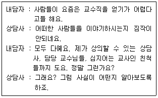
- 파행적 의사소통
- 구체성의 결여
- 가정된 불가능
- 강박적 사고
(정답률: 70%)
13. 사이버 직업상담 기법으로 적합하지 않은 것은?
- 질문내용 구상하기
- 핵심 진로논점 분석하기
- 진로논점 유형 정하기
- 작업정보 가공하기
(정답률: 69%)
14. 특성-요인 직업 상담의 과정에서 내담자가 능동적으로 참여하는 단계는?
- 상담 또는 치료 단계
- 분석 단계
- 진단 단계
- 종합 단계
(정답률: 64%)
15. 내담자중심 상담이론의 특징이 아닌 것은?
- 동일한 상담원리를 정상적 상태에 있는 사람이나 정신적으로 부적응상태에 있는 사람 모두에게 적용한다.
- 상담은 모든 건설적인 대인관계의 실제 사례 중 단지 하나에 불과하다.
- 실험에 기초한 귀납적인 접근방법이며, 실험적 방법을 상담과정에 적용한다.
- 상담의 과정과 그 결과에 대한 연구조사를 통하여 개발되어 왔다.
(정답률: 74%)
16. Cottle의 원형검사 시 3가지 원을 그리게 되는데 이 때 원의 상대적 배치에 따른 시간관계성에 관한 설명으로 틀린 것은?
- 중복되지 않고 경계선에 접해 있는 원은 시간차원의 연결을 의미하며, 구별된 사건의 선형적 흐름을 뜻한다.
- 어떤 것도 접해 있지 않은 원은 시간차원의 완전성을 의미한다.
- 부분적으로 중첩된 원들은 시간차원의 연합을 나타낸다.
- 완전히 중첩된 원들은 시간차원의 통합을 의미한다.
(정답률: 79%)
17. 직업상담에서 도움이 되는 면담행동이 아닌 것은?
- 이해가능하고 명료한 말을 사용한다.
- 충고한다.
- 가끔 고개를 끄덕인다.
- 개방적 질문을 한다.
(정답률: 87%)
18. 행동주의 상담에서 외적인 행동변화를 촉진시키는 방법이 아닌 것은?
- 주장훈련
- 자기관리 프로그램
- 행동계약
- 인지적 재구조화
(정답률: 75%)
19. 6개의 생각하는 모자(six thinking hats)는 직업상담의 중재와 관련된 단계들 중 무엇을 위한 것인가?
- 직업정보의 수집
- 의사결정의 촉진
- 보유기술의 파악
- 시간관의 개선
(정답률: 82%)
20. 인지치료적 직업상담에 관한 설명으로 틀린 것은?
- 심리교육적 접근을 한다.
- 아동기 경험을 중요시한다.
- 잘못된 생각과 신념을 수정한다.
- 사람의 생각이 직업행동을 결정하는데 중요한 영향을 미친다고 가정한다.
(정답률: 73%)
2과목: 직업심리학
21. 다음 중 투사적 심리검사가 아닌 것은?
- ISB(Incomplete Sentences Blank)
- RIT(Rorschach Inkblot Test)
- TAT(Thematic Apperception Test)
- CAT(Cognitive Ability Test)
(정답률: 66%)
22. Super가 제시한 진로발달 단계 중 탐색기에 해당하는 것은?
- 욕구와 환상이 지배하는 단계로 사회 참여와 현실 검증력의 발달로 점차 흥미와 능력을 중시하게 된다.
- 잠정기, 전환기, 수정기의 하위단계로 나누어진다.
- 자신에게 적합한 분야를 발견해서 생활의 터전을 마련하고자 한다.
- 개인은 비교적 안정된 만족스런 삶을 살아간다.
(정답률: 49%)
23. 내담자의 적성과 흥미 또는 성격이 직업적 요구와 달라서 직업적응문제를 겪을 때, 이러한 문제해결에 가장 적합한 방법은?
- 스트레스 관리 방안 모색
- 직업 전환
- 인간관계 개선 프로그램 제공
- 전근
(정답률: 83%)
24. 다음은 Williamson이 분류한 진로선택 문제 중 어떤 유형에 해당하는가?
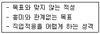
- 불확실한 선택
- 미선택
- 흥미와 적성의 불일치
- 현명하지 않은 선택
(정답률: 55%)
25. 직무평가에 관한 설명으로 틀린 것은?
- 직무의 상대적 가치를 결정하므로 직무 분석과는 달리 직무에 대한 가치 판단을 할 수 있다.
- 직무 간의 내용과 성질에 따라 임금 형평성을 결정할 수 있다.
- 대표적인 직무평가 방법 중 하나는 식역 특성 분석이다.
- 직무평가 방법들 간의 차이는 조직 성공 기여도, 노력 정도, 작업 조건 등 주로 비교과정에 어떠한 준거를 사용하는 지에 달려 있다.
(정답률: 56%)
26. 심리검사에 관한 설명으로 틀린 것은?
- 심리검사는 준거참조검사이다.
- 측정의 오차가 작을수록 신뢰도는 높은 경향이 있다.
- 검사의 신뢰도가 높으면 타당도도 높게 나타나지만 항상 그런 것은 아니다.
- 검사가 측정하고자 하는 심리적 구인(구성개념)을 정확하게 측정하는 것은 타당도의 개념이다.
(정답률: 70%)
27. A유형의 행동특징에 관한 설명으로 틀린 것은?
- 근무 시간을 철저하게 지키고, 항상 긴박감을 느낀다.
- 평소 활동이 공격적이고 적대적이며 참을성이 없다.
- 시간에 대한 걱정이 덜 하고 여유를 가진다.
- 사내의 활동이 경쟁적이며 승부에 집착한다.
(정답률: 82%)
28. 내담자의 직무능력을 언어능력과 동작성 능력으로 구분하여 분석하는 대표적인 검사는?
- 비문자형 종합검사(NATB)
- 웩슬러 성인용 지능검사(WAIS)
- FQ(Finger-Function Quotient)검사
- 수정베타 검사법(제2판)
(정답률: 82%)
29. 스트레스에 관한 설명으로 틀린 것은?
- 일반적응증후의 3단계는 경계단계, 저항단계, 회복단계이다.
- 스트레스 강도와 생산성 간의 관계는 역 U자 관계이다.
- Selye가 “일반적응증후”라는 개념을 제시하면서 최초의 학문적 연구가 시작되었다.
- 스트레스 정보의 전달은 자율신경계를 통한 과정으로 뇌하수체를 경유하는 뇌분비계에 의한 전달과정으로 구분 될 수 있다.
(정답률: 75%)
30. 검사의 신뢰도에 영향을 주는 요인이 아닌 것은?
- 개인차
- 문항수
- 규준집단
- 문항에 대한 반응수
(정답률: 62%)
31. 점수유형 중 그 의미가 모든 사람에게 단순하고 직접적이며, 한 집단 내에서 개인의 상대적 위치를 살펴보는데 적합한 것은?
- 원점수
- T 점수
- 표준점수
- 백분위점수
(정답률: 67%)
32. 팀 생산성을 높이기 위해서 부하들을 철저히 감독하라는 사장의 요구와 작업능률을 높이려면 자발적으로 일할 수 있는 분위기를 만들어 주어야 한다는 부하들의 요구 사이에서 고민하는 팀장의 스트레스 원인은?
- 송신자내 갈등(intrasender conflict)
- 개인간 역할갈등(inter-role conflict)
- 개인내 역할갈등(person-role conflict)
- 송신자간 갈등(intersender conflict)
(정답률: 67%)
33. Holland의 진로발달에 대한 육각 모형에서 서로 대각선에 위치하여 대비되는 특성을 지닌 유형들로 잘못 짝지어진 것은?
- 진취형(E)과 탐구형(I)
- 사회형(S)과 예술형(A)
- 현실형(R)과 사회형(S)
- 예술형(A)과 관습형(C)
(정답률: 71%)
34. 진로발달이론 중 다음 명제에 기초한 이론은?
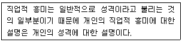
- Phillips의 이론
- Holland의 이론
- Roe의 이론
- Krumboltz의 이론
(정답률: 71%)
35. 직업선호도 검사에 관한 설명으로 틀린 것은?
- 직업흥미검사, 지능검사, 생활사 검사의 세검사로 구성된다.
- 직업흥미검사의 목적은 개인에게 접합한 직업선정에 있다.
- 생활사 검사는 개인의 과거경험과 생활환경을 통해 직무성과를 예측하는데 활용된다.
- 시간상 제약이 있을 경우에는 직업흥미검사만으로도 직업선정이 가능하다.
(정답률: 56%)
36. Krumboltz의 사회학습이론에서 개인의 진로에 영향을 미치는 요인이 아닌 것은?
- 유전적 요인 : 물려받거나 생득적인 개인의 특성들
- 부모 특성 : 부모의 성격, 자녀에 대한 기대 및 양육 방식을 포함한 부모의 특성들
- 환경조건과 사건 : 보통 개인의 통제를 벗어나는 사회적, 문화적, 정치적, 경제적 사항들
- 과제-접근 기술 : 목표 설정, 가치 명료화, 대안 형성, 직업적 정보 획득 등을 포함하는 기술
(정답률: 60%)
37. 가치중심적 진로접근 모형에 관한 설명으로 틀린 것은?
- 개인이 우선권을 부여하는 가치들은 얼마 되지 않는다.
- 가치는 환경 속에서 가치를 담은 정보를 획득함으로써 학습된다.
- 생애만족은 중요한 모든 가치들을 만족시키는 생애역할들에 의존한다.
- 생애역할에서의 성공은 개인적 요인보다는 외적 요인들에 의해 더 결정된다.
(정답률: 71%)
38. 개인의 욕구와 능력을 환경의 요구사항과 관련시켜 진로행동을 설명하는 이론으로, 개인과 환경 간의 상호작용을 통한 욕구충족을 강조하는 이론은?
- 욕구이론
- 특성요인이론
- 사회학습이론
- 직업적응이론
(정답률: 37%)
39. 경력개발을 위한 교육훈련을 실시할 때 가장 먼저 고려해야 하는 사항은?
- 사용 가능한 훈련방법에는 어떤 것들이 있는지에 대한 고찰
- 현 시점에서 어떤 훈련이 필요한지에 대한 요구분석
- 훈련프로그램의 효과를 평가하고 개선할 수 있는 방안을 계획하고 수립
- 훈련방법에 따른 구체적인 훈련프로그램 개발
(정답률: 76%)
40. 어떤 직업적성검사의 신뢰도 계수가 1.0이면 그 검사의 타당도 계수는?
- 1.0
- 0
- 0.5
- 알 수 없다.
(정답률: 67%)
3과목: 직업정보론
41. 직업 관련 주요정보망과 운영기관이 바르게 짝지어진 것은?
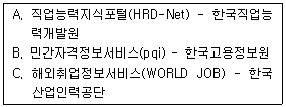
- A
- B
- C
- A, B, C
(정답률: 42%)
42. 단계별 일자리지원 프로그램인 취업성공패키지 사업에 설명으로 틀린 것은?
- 일정 소득수준 이하의 저소득층의 취업지원을 목적으로 하는 통합적인 취업지원제도이다.
- 차상위층까지를 정책대상으로 하는 자활사업이나 근로장려세제와 정책대상의 범위에 있어 동일하다.
- 지원대상자의 개인별 취업역량 등에 대한 정확한 진단을 토대로 최장 1년의 기간 내에서 단계별로 통합적인 취업 지원을 실시한다.
- 일정 요건을 충족한 신청자에게는 참여수당, 훈련참여지원수당, 취업성공수당을 지급한다.
(정답률: 67%)
43. 국가기술자격 종목과 해당 직무분야가 틀리게 짝지어진 것은?
- 임상심리사 1급 – 보건 · 의료
- 텔레마케팅관리사 - 경영 · 회계 · 사무
- 직업상담사1급 - 사회복지 · 종교
- 어로산업기사 – 농림어업
(정답률: 66%)
44. 한국직업정보시스템(워크넷/직업 · 진로)에서 백분위점수의 중요도 형태로 제공되지 않는 정보는?
- 평균임금
- 직업가치관
- 업무수행능력
- 성 격
(정답률: 43%)
45. 공공직업정보와 비교한 민간직업정보의 특성에 관한 설명으로 틀린 것은?
- 필요한 시기에 최대한 활용되도록 한시적으로 신속하게 생산되어 운영된다.
- 국제적으로 인정되는 객관적인 기준에 근거하여 직업을 분류한다.
- 특정한 목적에 맞게 해당 분야 및 직종을 제한적으로 선택한다.
- 시사적인 관심이나 흥미를 유도할 수 있도록 해당 직업을 분류한다.
(정답률: 72%)
46. Q-Net(www.q-net.or.kr)에서 제공하는 국가별 자격제도 정보가 아닌 것은?
- 영국의 자격제도
- 프랑스의 자격제도
- 호주의 자격제도
- 스위스의 자격제도
(정답률: 62%)
47. 다음 중 직업의 성립요건에 해당되지 않는 것은?
- 계속성
- 윤리성
- 사회성
- 동일성
(정답률: 71%)
48. 기술기초이론 지식 또는 숙련기능을 바탕으로 복합적인 기초기술 및 기능업무를 수행할 수 있는 능력의 보유여부를 검정기준으로 하는 국가 기술자격 등급은?
- 기능장
- 기사
- 산업기사
- 기능사
(정답률: 61%)
49. 건설기계기사, 공조냉동기계기사, 승강기기사 자격이 공통으로 해당되는 직무분야는?
- 건설분야
- 재료분야
- 기계분야
- 안전관리분야
(정답률: 60%)
50. 실업급여 중 취업촉진수당이 아닌 것은?
- 직업능력개발 수당
- 광역구직 활동비
- 훈련연장 급여
- 이주비
(정답률: 70%)
51. 한국직업사전에서 제공하는 부가 직업정보 중 작업강도의 ‘보통 작업’의 정의로 옳은 것은?
- 최고 10kg의 물건을 들어 올리고 15kg 정도의 물건을 빈번히 들어 올리거나 운반한다.
- 최고 15kg의 물건을 들어 올리고 20kg 정도의 물건을 빈번히 들어 올리거나 운반한다.
- 최고 20kg의 물건을 들어 올리고 10kg 정도의 물건을 빈번히 들어 올리거나 운반한다.
- 40kg의 물건을 들어 올리고 20kg 정도의 물건을 빈번히 들어 올리거나 운반한다.
(정답률: 75%)
52. 워크넷 구인구직 통계현황에서 특정 연도의 신규구인인원 130만명, 신규구직건수(신규구직자 수) 200만건, 취업건수가 68만건일 때, (A)구인배율과 (B)취업률(%)은?
- A : 0.55, B : 29.0
- A : 0.65, B : 34.0
- A : 0.55, B : 34.0
- A : 0.65, B : 29.0
(정답률: 66%)
53. 질문지를 활용한 면접조사를 통해 직업정보를 수집할 때, 면접자가 지켜야 할 일반적 원칙으로 틀린 것은?
- 질문지를 숙지하고 있어야 한다.
- 응답자와 친숙한 분위기를 형성해야 한다.
- 개방형 질문인 경우에는 응답내용을 해석하고 요약하여 기록해야 한다.
- 면접자는 응답자가 이질감을 느끼지 않도록 복장이나 언어사용에 유의해야 한다.
(정답률: 71%)
54. 한국직업정보시스템(워크넷/직업 · 진로)에서 제공하는 학과정보 중 공학계열에 해당하는 학과가 아닌 것은?
- 식품생명공학과
- 건축학과
- 안경광학과
- 카메카트로닉스학과
(정답률: 65%)
55. 직업정보 분석시 유의점으로 틀린 것은?
- 전문적인 시각에서 분석한다.
- 직업정보원고하 제공원에 대해 제시한다.
- 동일한 정보에 대해서는 한 가지 측면으로 분석한다.
- 원자료의 생산일, 자료표집방법, 대상 등을 검토해야 한다.
(정답률: 76%)
56. 한국산업표준산업분류의 산업분류 적용원칙에 관한 설명으로 틀린 것은?
- 생산단위는 투입물과 생산공정을 제외한 산출물을 고려하여 그들의 활동을 가장 정확하게 설명된 항목에 분류해야 한다.
- 복합적인 활동단위는 우선적으로 최상급 분류 단계를 정확히 결정하고, 순차적으로 중, 소, 세, 세세분류단계 항목을 결정하여야 한다.
- 산업활동이 결합되어 있는 경우에는 그 활동단위의 주된 활동에 따라서 분류하여야 한다.
- 수수료 또는 계약에 의하여 활동을 수행하는 단위는 자기 계정과 자기책임하에서 생산하는 단위와 동일 항목에 분류되어야 한다.
(정답률: 62%)
57. 한국직업전망의 수록직업에 관한 설명으로 틀린 것은?(관련 규정 개정전 문제로 기존 정답은 2번입니다. 여기서는 2번을 누르면 정답 처리 됩니다.)
- 한국고용직업분류(KECO)에 근거하여 종사자 수가 일정규모 이상이거나 청소년 및 구직자로부터 높은 관심을 받는 직업들을 우선으로 선정하였다.
- 재직자의 경력개발을 위해 승진이나 장기간의 경력개발을 통해 진입하게 되는 관리직에 해당하는 직업군은 최대화 하였다.
- 이용자들이 원하는 직업정보를 쉽고 간편하게 찾아볼 수 있도록 수록직업을 16개 분야로 구분하여 제시하였다.
- 직무가 유사하거나 일반인의 관심이 낮은 직업들은 보다 포괄적인 하나의 직업으로 통합하였다.
(정답률: 71%)
58. 다음 고용정보에 관한 분석으로 틀린 것은?
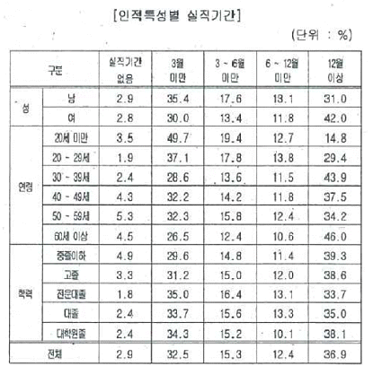
- 남자의 경우 3개월 미만 실직기간 비중이 가장 높음
- 연령별로는 30대 이상에서 1년 이상 장기 실업 비중이 높음
- 10~20대의 경우 3개월 미만의 실직기간 비중이 타 연령층에 비해 높음
- 학력별로는 전문대졸의 경우 1년 이상 장기 실업 비중이 타 학력층에 비해 높음
(정답률: 66%)
59. 평생학습계좌제(www.all.go.kr)에 관한 설명으로 틀린 것은?
- 개인의 다양한 학습경험을 온라인 학습이력관리 시스템에 기록 · 누적하여 체계적인 학습설계를 지원한다.
- 개인의 학습결과를 학력이나 자격인정과 연계하거나 고용정보로 활용할 수 있게 한다.
- 평생학습계좌제 개설대상은 전 국민으로 한다.
- 온라인으로 계좌시설이 가능하며 방문신청은 전국 고용센터에 방문하여 개설한다.
(정답률: 59%)
60. 한국표준산업분류에 관한 설명으로 틀린 것은?
- 가정 내의 가사 활동은 모두 포함한다.
- 산업분류는 생산단위가 주로 수행하고 있는 산업활동을 그 유사성에 따라 체계적으로 유형화 한 것이다.
- 동일단위에서 제조한 재화의 소매활동은 별개활동으로 파악되지 않고 제조활동으로 분류되어야 하는 것이 원칙이다.
- 중분류의 번호는 01부터 99까지 부여하였다.
(정답률: 72%)
4과목: 노동시장론
61. 다음 중 파업이론에 관한 옳은 설명을 모두 짝지은 것은?
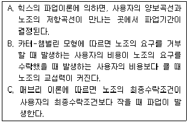
- A, B
- B, C
- A, C
- A, B, C
(정답률: 65%)
62. 구인처에서 요구하는 기술을 갖춘 근로자가 없어서 발생하는 실업은?
- 구조적 실업
- 잠재적 실업
- 마찰적 실업
- 자발적 실업
(정답률: 67%)
63. 인적자본론과 선별가설의 주장으로 옳은 것을 모두 짝지은 것은?
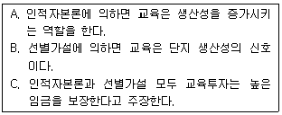
- A
- B
- A, B
- A, B, C
(정답률: 63%)
64. 어느 국가의 생산가능인구의 구성비가 다음과 같을 때 이 국가의 실업률은?
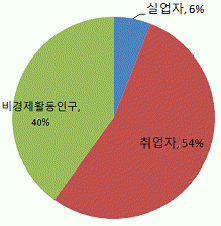
- 6.0%
- 10.0%
- 11.1%
- 13.2%
(정답률: 74%)
65. 경제화동인구조사에서 취업자로 분류되는 사람은?
- 명예퇴직을 하여 연금을 받고 있는 전직 공무원
- 하루 3시간씩 구직활동을 하고 있는 전직 은행원
- 하루 1시간씩 학교 부근 식당에서 아르바이트를 하고 있는 대학생
- 하루 2시간씩 남편의 상점에서 무급으로 일하는 기혼여성
(정답률: 69%)
66. 수입이 제한되어있던 자동차의 수입이 자유화되었다고 할 때 다른 조건이 변하지 않는다면 자동차를 제조하는 노동의 수요탄력성은?
- 커진다.
- 작아진다.
- 영향이 없다.
- 커질 수도 있고 작아질 수도 있다.
(정답률: 56%)
67. 노동조합 조직부문과 비조직부문 간의 임금격차를 축소시키는 효과를 모두 짝지은 것은?
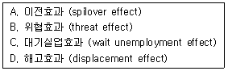
- A, B
- B, C
- C, D
- A, D
(정답률: 65%)
68. 노동조합의 역사에서 가장 오래된 조합의 형태는?
- 산업별 노동조합(Industral Union)
- 기업별 노동조합(Company Union)
- 직업별 노동조합(Craft Union)
- 일반 노동조합(General Union)
(정답률: 68%)
69. 다음 중 경쟁노동시장 모형의 기본 가정으로 틀린 것은?
- 노동자와 고용주는 자유로이 시장에 진입하거나 시장을 떠나거나 한다.
- 노동자와 고용주는 완전정보를 갖는다.
- 사용자의 단결조직은 없고 노동자의 단결조직은 있다.
- 직무의 성격은 모두 동일하며 임금의 차이만 존재한다.
(정답률: 58%)
70. 교육투자에 관한 설명으로 틀린 것은?
- 사적 수익률은 교육연수 증가에 따른 개인근로 소득의 증가율을 의미한다.
- 교육투자의 사회적 수익률이 실물자본투자의 사회적 수익률에 비해 크다면 교육투자는 사회적으로도 바람직한 자원배분이다.
- 학력이 간판으로서의 기능을 하고, 기업이 학력을 선발기준으로 삼는 고용관행이 고착화되면 고학력에 대한 민간부문의 수요는 과도하게 높아질 수 있다.
- 정부는 사적 수익률을 높이는 데 초점을 맞추어야 한다.
(정답률: 66%)
71. 다음 중 강제적 노동쟁의 조정방법은?
- 알선, 조정
- 중재, 긴급조정
- 조정, 긴급조정
- 알선, 중재
(정답률: 61%)
72. 일단 사용자에 의하여 고용된 근로자는 일정한 기간 내에 노동조합에 가입하여야 할 것을 정한 단체협약상의 조합원 자격제도는?
- 클로즈드숍(Closed Shop)
- 오픈숍(Open Shop)
- 유니언숍(Union Shop)
- 노동조합원 우대사업장(Preferential Shop)
(정답률: 65%)
73. 실업률을 낮추기 위한 대책과 가장 거리가 먼 것은?
- 직업훈련 기회의 제공
- 재정지출의 축소
- 금리 인하
- 법인세 인하
(정답률: 65%)
74. 다른 조건이 일정할 때 비노동소득의 발생이 노동공급에 미치는 영향은?
- 소득효과가 대체효과보다 더 크기 때문에 노동공급이 증가한다.
- 대체효과가 소득효과보다 더 크기 때문에 노동공급이 증가한다.
- 대체효과만 있기 때문에 노동공급이 증가한다.
- 소득효과만 있기 때문에 노동공급이 감소한다.
(정답률: 57%)
75. 기술발전과 노동이 대체 생산요소라고 할 때 기술발전이 노동시장 균형에 미치는 효과로 옳은 것은?(단, 다른 조건은 일정하며 노동공급곡선은 우상향함)
- 균형 고용수준 상승, 균형임금 상승
- 균형 고용수준 상승, 균형임금 하락
- 균형 고용수준 하락, 균형임금 상승
- 균형 고용수준 하락, 균형임금 하락
(정답률: 45%)
76. 다음 중 노동공급의 결정요인을 모두 짝지은 것은?
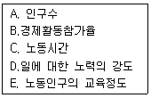
- A, B
- A, B, C
- A, B, C, D
- A, B, C, D, E
(정답률: 70%)
77. 생산성 임금제를 따를 때 실질 생산성 증가율이 6%이고 물가상승률이 3%라고 하면 명목임금의 인상분은?
- 3%
- 6%
- 9%
- 12%
(정답률: 70%)
78. 인적자본론의 노동이동에 관한 설명으로 틀린 것은?
- 사직률과 해고율은 기업특수적 인적자본과 음(-)의 상관관계를 갖는다.
- 인적자본론에서는 장기근속자일수록 기업특수적 인적자본량이 많아져 해고율이 낮아진다고 주장한다.
- 임금률이 높을수록 해고율은 높다.
- 사직률과 해고율은 경기변동에 따라 상반되는 관련성을 갖고 있다.
(정답률: 61%)
79. 노동과 자본만이 생산요소이고 두 생산요소가 서로 대체요소인 경우, 자본의 가격이 하락할 때 노동수요의 변화는 어떤 형태로 나타나는가?
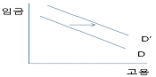
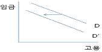
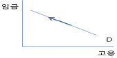
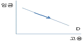
(정답률: 53%)
80. 최저임금제도와 근로장려세제(EITC ; Earned Income Tax Credit)에 관한 설명으로 틀린 것은?
- EITC는 이론적으로 저생산성 저임금근로자의 실업을 유발하지 않는다.
- EITC는 저소득근로계층을 수혜대상으로 한다.
- EITC와 최저임금제 실시는 공통적으로 사중손실(Dead Weight Loss) 발생으로 총경제후생(Economic Surplus)을 축소시킨다.
- 최저임금제도하에서는 최저임금 이하를 받는 근로자에게 그 혜택이 주어진다.
(정답률: 56%)
5과목: 노동관계법규
81. 근로기준법상 평균임금을 산정기준으로 하지 않는 것은?
- 야간근로수당
- 퇴직금
- 휴업보상
- 장해보상
(정답률: 53%)
82. 고용정책기본법령상 대량 고용변동의 신고기준으로 옳은 것은?
- 상시 근로자 200명 미만을 시용하는 사업 또는 사업장에서 1개월 이내에 40명 이상 이직할 경우
- 상시 근로자 200명 미만을 시용하는 사업 또는 사업장에서 1개월 이내에 상시 근로자 총수의 100분의 20 이상 이직할 경우
- 상시 근로자 300명 미만을 시용하는 사업 또는 사업장에서 1개월 이내에 30명 이상 이직할 경우
- 상시 근로자 300명 미만을 시용하는 사업 또는 사업장에서 1개월 이내에 상시 근로자 총수의 100분의 10 이상 이직할 경우
(정답률: 61%)
83. 근로자직업능력개발법령상의 내용에 관한 설명으로 틀린 것은?
- 직업능력개발훈련은 15세 이상인 자에게 실시한다.
- 직업능력개발훈련은 집체훈련, 현장훈련, 원격훈련, 혼합훈련의 방법으로 실시한다.
- 근로자에게 종전의 직업과 유사하거나 새로운 직업에 필요한 직무수행능력을 습득시키기 위하여 실시하는 직업능력개발훈련을 전직훈련이라고 한다.
- 재해위로금의 산정기준이 되는 통상임금은 산업재해보상보험법에 의한 최고 보상기준 금액 및 최저 보상기준 금액을 각각 그 상한 및 하한으로 한다.
(정답률: 57%)
84. 남녀고용평등과 일 · 가정 양립 지원에 관한 법률에 명시되어 있는 내용이 아닌 것은?
- 직장 내 성희롱의 금지 및 예방 교육
- 동일 사업 내의 동일 가치 노동에 대한 동일 임금 보장
- 육아휴가
- 생리휴가
(정답률: 69%)
85. 고용보험법상 피보험자격의 취득일과 상실일에 관한 설명으로 틀린 것은?(단, 자영업자인 피보험자는 제외)
- 적용 제외 근로자였던 자가 이 법의 적용을 받게 된 경우에는 그 적용을 받게 된 날에 피보험 자격을 취득한 것으로 본다.
- 적용 제외 근로자에 해당하게 된 경우에는 그 적용 제외 대상자가 된 날에 피보험자격을 상실한다.
- 피보험자가 사망한 경우에는 사망한 날의 다음날에 피보험자격을 상실한다.
- 피보험자가 이직한 경우에는 이직한 날에 피보험자격을 상실한다.
(정답률: 51%)
86. 남녀고용평등과 일 · 가정 양립 지원에 관한 법률의 목적으로 명시되어 있지 않는 것은?
- 여성 고용 촉진
- 가사노동 가치의 존중
- 모성 보호 촉진
- 고용에서 남녀의 평등한 기회와 대우 보장
(정답률: 63%)
87. 고용상 연령차별금지 및 고령자고용촉진에 관한 법령상 준고령자의 연령으로 옳은 것은?
- 45세 이상 60세 미만
- 45세 이상 50세 미만
- 50세 이상 55세 미만
- 55세 이상 60세 미만
(정답률: 74%)
88. 헌법상 노동기본권에 관한 설명으로 틀린 것은?
- 국가는 법률이 정하는 바에 의하여 최저임금제를 시행하여야 한다.
- 근로조건의 기준은 인간의 존엄성을 보장하도록 법률로 정한다.
- 여자의 근로는 특별한 보호를 받으며, 고용·임금 및 근로조건에 있어서 부당한 차별을 받지 아니한다.
- 장애인은 법률이 정하는 바에 의하여 우선적으로 근로의 기회를 부여받는다.
(정답률: 74%)
89. 고용상 연령차별금지 및 고령자고용촉진에 관한 법률상 우선고용직종에 관한 설명으로 옳은 것은?
- 고용정책심의회는 우선고용직종을 선정하고, 선정된 우선고용직종을 대통령령으로 명시하여야 한다.
- 고용노동부장관은 정당한 사유 없이 고용 확대 요청에 따르지 아니한 자에게 그 내용을 공표하거나 직업안정업무를 하는 행정기관에서 제공하는 직업지도와 취업알선 등 고용 관련 서비스를 중단할 수 있다.
- 모든 사업주는 우선고용직종이 신설되거나 확대됨에 따라 신규인력을 채용하는 경우 고령자와 준고령자를 우선적으로 고용하여야 한다.
- 공공기관의 장은 그 기관의 우선고용직종에 관한 고용현황을 고용노동부령으로 정하는 바에 따라 매월 고용노동부장관에게 제출하여야 한다.
(정답률: 51%)
90. 직업안정법상 직업안정기관의 장이 직업지도를 하여야 하는 대상으로서 구체적으로 명시되어 있지 않은 자는?
- 새로 취업하려는 사람
- 국민기초생활보장법상의 수급자
- 신체에 장애가 있는 사람
- 정신에 장애가 있는 사람
(정답률: 43%)
91. 근로자직업능력개발법에 명시된 직업능력개발훈련이 중요시되어야 하는 사람에 해당하지 않는 것은?
- 일용근로자
- 여성근로자
- 중소기업 기본법에 따른 중소기업의 근로자
- 제조업의 사무직에 종사하는 근로자
(정답률: 68%)
92. 고용정책기본법상 고용정책을 수립 · 시행할 때 실현되도록 하여야 할 기본원칙이 아닌 것은?
- 근로자의 직업선택의 자유가 확보되도록 할 것
- 근로자의 근로의 권리가 확보되도록 할 것
- 사업주의 자율적인 고용관리를 존중할 것
- 노동조합의 견제기능이 확보되도록 할 것
(정답률: 67%)
93. 근로자직업능력개발법상 직업능력개발훈련을 받는 근로자(산업재해보상보험법의 적용을 받는 자를 제외한다)가 훈련 중에 그 훈련으로 인하여 재해를 입은 경우에 관한 설명으로 옳은 것은?
- 국가는 그 근로자에게 재해위로금을 지급하여야 한다.
- 직업능력개발훈련을 실시하는 자는 그 근로자에게 재해위로금을 지급하여야 한다.
- 지방자치단체는 그 근로자에게 재해위로금을 지급하여야 한다.
- 위탁에 의한 직업능력개발훈련을 받는 근로자에 대하여는 원칙적으로 그 위탁을 받은 자가 재해 위로금을 부담한다.
(정답률: 45%)
94. 직업안정법령상 직업정보제공사업자의 준수사항에 해당하지 않는 것은?
- 구직자의 이력서 발송을 대행하지 아니할 것
- 직업정보제공사업의 광고문에 취업지원 등의 표현을 사용하지 아니할 것
- 구인자의 신원이 확실하지 아니한 구인광고를 게재하지 아니할 것
- 직업정보제공매체의 구인 · 구직의 광고에는 구인 · 구직자의 주소 또는 전화번호를 기재하지 아니할 것
(정답률: 67%)
95. 고용 상 연령차별금지 및 고령자 고용촉진에 관한 법률상 정년에 관한 설명으로 틀린 것은?(관련 규정 개정전 문제로 기존 정답은 4번입니다. 여기서는 4번을 누르면 정답 처리 됩니다.)
- 사업주가 근로자의 정년을 정하는 경우에는 그 정년이 60세 이상이 되도록 노력하여야 한다.
- 사업주는 정년에 도달한 자가 그 사업장에 다시 취업하기를 희망할 때 그 직무수행능력에 맞는 직종에 재고용하도록 노력하여야 한다.
- 고용노동부장관은 정년 연장에 따른 사업체의 인사와 임금 등에 대하여 상담, 자문, 그밖에 필요한 협조와 지원을 하여야 한다.
- 사업주는 고령자인 정년 퇴직자를 재고용할 때 퇴직금과 연차유급 휴가일수 계산을 위한 계속근로기간을 산정할 때 종전의 근로시간을 제외해서는 아니 된다.
(정답률: 72%)
96. 다음 ( )에 알맞은 것은?
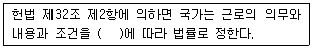
- 민주주의원칙
- 자유주의원칙
- 사회국가원칙
- 복지국가원칙
(정답률: 70%)
97. 남녀고용평등과 일 가정 양립 지원에 관한 법률의 개념설명으로 틀린 것은?
- 사업주가 근로자에게 혼인 등의 사유로 합리적 이유 없이 근로조건을 달리하는 경우는 차별에 해당한다.
- 성적 언동 또는 그 밖의 요구에 따르지 아니하였다는 이유로 고용상의 불이익을 주는 것은 직장내 성희롱에 해당된다.
- 적극적 고용개선조치란 현존하는 남녀 간의 고용차별을 없애거나 고용평등을 촉진하기 위하여 잠정적으로 특정성을 우대하는 조치이다.
- 근로자란 사업주에게 고용된 자를 말하며, 취업할 의사를 가진 자는 근로자에 해당하지 않는다.
(정답률: 70%)
98. 근로기준법의 내용에 관한 설명으로 틀린 것은?
- 임금채권은 3년간 행사하지 아니하면 시효로 소멸한다.
- 명시된 근로조건이 사실과 다를 경우에 근로자는 근로조건 위반을 이유로 손해의 배상 청구를 노동위원회에 신청할 수 있다.
- 사용자는 전차금(前借金)이나 그 밖에 근로할 것을 조건으로 하는 전대(前貸)채권과 임금을 상계하지 못한다.
- 사용자는 근로계약 불이행에 대한 위약금을 예정하는 계약을 체결한 경우 사용자는 근로자의 근로계약 불이행이 있으면 약정된 위약금을 청구할 수 있다.
(정답률: 56%)
99. 근로기준법상 해고예고제도가 적용되는 근로자에 해당하는 자는?(관련 규정 개정전 문제로 여기서는 기존 정답인 1번을 누르면 정답 처리됩니다. 자세한 내용은 해설을 참고하세요.)
- 계절적 업무에 7개월의 기간을 정하여 사용된 자
- 1개월의 기간을 정하여 사용된 자
- 월급근로자로서 4개월을 근무한 자
- 수습 사용 중인 근로자로 3개월 이내인 자
(정답률: 65%)
100. 고용보험법 적용 제외 근로자에 해당하는 자는?
- 60세에 새로 고용된 근로자
- 1개월 미만 동안 고용되는 일용근로자
- 사립학교교직원 연금법의 적용을 받는 자
- 1일 6시간씩 주3일 근무하기로 한 자
(정답률: 70%)